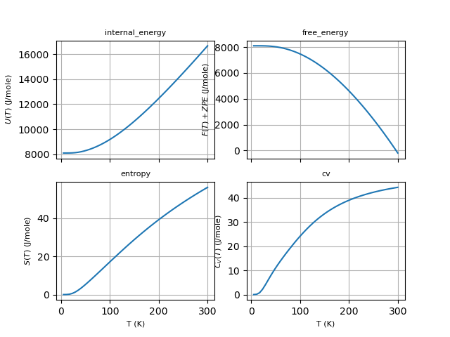

This example shows how to compute and plot thermodinamic properties within the harmonic approximation using the phonon DOS produced by anaddb.
Out:
Full Formula (Al1 As1)
Reduced Formula: AlAs
abc : 3.970101 3.970101 3.970101
angles: 60.000000 60.000000 60.000000
Sites (2)
# SP a b c
--- ---- ---- ---- ----
0 Al 0 0 0
1 As 0.25 0.25 0.25
Abinit Spacegroup: spgid: 0, num_spatial_symmetries: 24, has_timerev: True, symmorphic: False
Zero point energy: 0.08400926480898568 eV 1.3459768000755305e-20 J 0.0030872835637731303 Ha
from __future__ import print_function
from abipy.abilab import abiopen
import abipy.data as abidata
# Read the Phonon DOS from the netcd file produced by anaddb (prtdos 2)
ncfile = abiopen(abidata.ref_file("trf2_5.out_PHDOS.nc"))
phdos = ncfile.phdos
# Print crystalline structure and zero-point energy.
print(ncfile.structure)
zpe = phdos.zero_point_energy
print("Zero point energy:", zpe, zpe.to("J"), zpe.to("Ha"))
# Compute free energy from 2 to 300 K (20 points)
# By default, energies are is eV and thermodynamic quantities are given
# on a per-unit-cell basis.
f = phdos.get_free_energy(tstart=2, tstop=300, num=20)
#f.plot()
# Plot U, F, S, Cv as a function of T.
# Use J/mol units, results are divided by formula_units.
phdos.plot_harmonic_thermo(units="Jmol", formula_units=1)
ncfile.close()
Total running time of the script: ( 0 minutes 0.546 seconds)